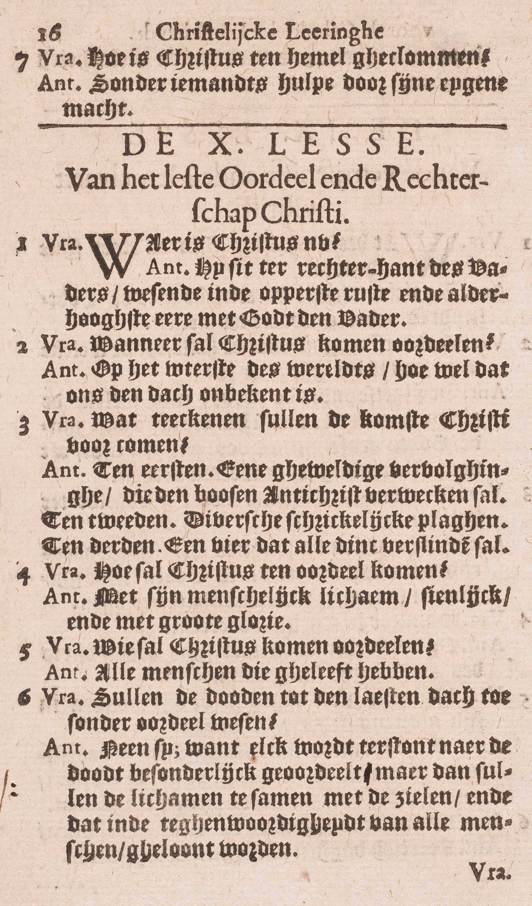

BEKNOPTE VERKLARING
van de
MECHELSE CATECHISMUS
ten gebruike van het middelbaar onderwijs
EERSTE DEEL
–
NEGENDE LES
Van de Nederdaling ter helle, de Verrijzenis en de Hemelvaart van Christus
| Die nedergedaald is ter helle | De nederdaling zelf | Wat heeft Christus gedaan na zijn dood? | |
| Betekenis van het woord hel | Wat verstaat gij door de hel, tot dewelke Christus nedergedaald is? | ||
| Reden van de nederdaling ter helle | Waarom is Christus nedergedaald ter helle? | ||
| Op de derde dag verrezen is van de dood | Tijd van de verrijzenis | Wanneer is Christus verrezen? | |
| Reden van het behoud van de vijf wonden in Christus’ glorieuze lichaam | Waarom heeft Christus de vijf wonden in zijn glorieus lichaam behouden? | ||
| Die opgeklommen is ten hemel | Dag | Wanneer is Christus ten hemel geklommen? | |
| Manier | Hoe is Christus ten hemel geklommen? |
Wat heeft Christus gedaan na zijn dood?
De ziel van Christus, verenigd met de godheid, is nedergedaald ter helle
 V. Hier, gelijk in de voorgaande les, is er spraak van Christus als mens.
A. De ziel van Christus, zonder het lichaam dat ondertussen levenloos in het graf bleef, verenigd met de godheid (Zie 8ᵉ les, v. 5.) is nedergedaald ter helle. (Zie v. 2.) De goddelijke natuur van Christus bleef altijd onveranderlijk, gelijk zij van in van de eeuwigheid altijd geweest is en tot in van de eeuwigheid altijd zal zijn.
Wat verstaat gij door de hel, tot dewelke Christus nedergedaald is?
De plaats onder de aarde, in dewelke de zielen zijn van de mensen, die, gestorven zijnde, Gods aanschijn óf voor enige tijd, óf voor alle eeuwigheid moeten derven
V. De zin is niet: tot welk deel van de hel is Christus nedergedaald, maar wel, wat verstaat men in ’t algemeen door het woord hel, dat in het Symbolum voorkomt.
A. De plaats onder de aarde: deze woorden geven ons de ligging van de hel te kennen: zij is, volgens de gewone manier van spreken van de H. Schrift en van de HH. Vaders onder de aarde gelegen; — in dewelke de zielen zijn van de mensen, die, gestorven zijnde: zij is dan een van de plaatsen tot dewelke de zielen van de overledenen gaan; — Gods aanschijn moeten derven: beroofd zijn van het goddelijk aanschijn te aanschouwen; — voor enige tijd of voor alle eeuwigheid: dus moeten enige zielen Gods aanschijn voor altijd, andere slechts voor enige tijd derven; voor altijd al degenen die sterven, ‘t zij in dadelijke doodzonde, ’t zij in de erfzonde alleen: tot deze laatste klasse behooren de kleine kinderen die vóór de jaren van verstand zonder Doopsel sterven; — voor enige tijd, sedert Christus’ dood, alleen degenen die, in Gods gratie gestorven zijnde, nochtans niet ontslagen zijn van alle dagelijksche zonden of last van penitentie; maar, vóór Christus dood, ook al de Heiligen, daar de hemel tot aan de verlossing gesloten is gebleven; doch deze laatsten hadden niet, gelijk de eersten, de pijn van gevoel te lijden.
Onder de naam hel komen hier dus vier plaatsen: 1° de hel van de verdoemden of dergenen die in dadelijke doodzonde sterven; 2° het voorgeborgte van de hel of het voorgeborgte van de kinderen; 3° het vagevuur en 4° het voorgeborgte van de oudvaders.
Waarom is Christus nedergedaald ter helle?
Om de zielen van de heilige oudvaders, en ook van anderen, die in Gods liefde gestorven waren, te troosten en te verlossen
A. Om de zielen van de heilige oudvaders: van de heilige patriarchen en menigvuldige andere Heiligen uit het joodse volk, en ook van anderen, die in Gods liefde gestorven waren: van Heiligen die niet tot het joodse volk behoorden, gelijk b. wv, de heilige man Job, te troosten: namelijk, met de volbrachte verlossing aan te kondigen, en aanstonds het aanschouwen van de goddelijke natuur te vergunnen, en te verlossen, met hun de goddelijke natuur te laten aanschouwen, en ze, op de dag van zijn Verrijzenis, uit het voorgeborgte van de oudvaders op de aarde te leiden.
Christus is dus voorzeker nedergedaald tot het voorgeborgte van de oudvaders; maar of Hij tot nog een andere plaats van de hel gegaan is, daar spreekt de Catechismus niet van.
Wanneer is Christus verrezen?
Op de derden dag na zijn dood, dat is, des Zondags ’s morgens
A. Op de derden dag na zijn dood: de Catechismus antwoordt hier met de woorden van het Symbolum, — dat is, des Zondags ’s morgens: deze woorden dienen tot uitlegging van de voorgaande.
De Verrijzenis van Christus is de grondsteen van ons Geloof, daar de Zaligmaker ze voorzeid en gesteld had tot een teken van de waarheid van zijn leer; zij is tevens het bewijs, dat onze zaligmaking voltrokken is, aangezien de dood, die door de Verrijzenis overwonnen werd, de straf is van de zonde. Daarom is Pasen, de dag waarop de Verrijzenis gevierd wordt, de grootste feestdag van het jaar.
Waarom heeft Christus de vijf wonden in zijn glorieus lichaam behouden?
Om daarmee zijn Verrijzenis te bevestigen, en om die aan alle mensen in het oordeel en aan de zaligen in de hemel te tonen
V. De vijf wonden: de vier nagelwonden in zijn handen en voeten, en de wonde van zijn doorstokene zijde. In zijn glorieus lichaam: in zijn lichaam dat uit het graf heel klaar en schoonblinkend, licht, subtiel en onlijdelijk was opgestaan.
A. Om twee redenen heeft Christus de vijf wonden in zijn glorieus lichaam behouden:
1° Om daarmee zijn verrijzenis te bevestigen: die wonden toonden immers dat Hij met datzelfde lichaam verrezen was, waarin Hij de dood ondergaan had, en zo bewees Hij de waarheid van zijn Verrijzenis, daar men, om te verrijzen, hetzelfde lichaam moet heraannemen, waarin men gestorven is.
2° Om die aan alle mensen in het oordeel en aan de zaligen in de hemel te tonen: aan de kwade mensen, in het oordeel, tot hun beschaming, en aan de zaligen, in het oordeel en gedurende de hele eeuwigheid, tot hun verblijding.
Wanneer is Christus ten hemel geklommen?
Veertig dagen na zijn Verrijzenis
A. Voor zijn Hemelvaart heeft Hij zijn Verrijzenis door verschillende verschijningen bevestigd, nog enige Sacramenten ingesteld, en met zijn discipelen over de instelling en het bestier van de H. Kerk gesproken.
Hoe is Christus ten hemel geklommen?
Zonder iemands hulp door zijn eigen macht
A. Door zijn eigen macht: door de macht van zijn menselijke natuur, te weten, door de gave van snelheid, die Christus bij da Verrijzenis, dank aan de verdiensten van zijn dood, bekomen had.
VRAGEN
Welke woorden van het Symbolum worden hier uitgelegd? — Hoeveel delen zijn er in deze les? — Wat wordt erin ieder deel geleerd?
Volgens welke natuur wordt Christus beschouwd, in het artikel van het Symbolum: « die nedergedaald is ter helle? » — Zeg, met de woorden van de Catechismus, hoe Christus nedergedaald is ter helle, en leg die woorden uit.
Wat vraagt de Catechismus als hij zegt: Wat verstaat gij door de hel, tot dewelke Christus nedergedaald is, en welke zin mag men aan deze woorden niet geven? — Waar is de hel gelegen? — Wie is er in? — Welk is het lot van de inwoners van de hel? — Hoelang blijven de zielen in de hel? — Wie moeten Gods aanschijn voor altijd derven? — Is er eenig verschil in het lot dergenen, die Gods aanschijn voor altijd moeten derven, en welk is het? — Wie komen onder de klasse dergenen, die Gods aanschijn slechts voor enige tijd derven, en welk verschil is er tussen het lot van deze allen? — Hoeveel en welke plaatsen komen dan onder de naam van hel?
Wie verstaat men hier door de heilige oudvaders en door de anderen, die in Gods liefde gestorven waren? — Hoe heeft Christus die heilige zielen getroost en verlost? — Tot welk deel van de hel is Christus dus, volgens de Catechismus, voorzeker gegaan?
Op de hoeveelsten dag na zijn dood, op welke dag en op welke tijd van de dag is Christus verrezen? — Is Christus’ Verrijzenis van groot belang voor ons en waarom? — Welke plaats bekleedt Pasen onder onze feestdagen en waarom?
Wat heeft Christus van zijn lijden in zijn glorieus lichaam behouden? — Wat betekent hier het woord glorieus? — Om hoeveel en om welke redenen heeft Christus dat willen behouden? — Leg die redenen uit.
Den hoeveelsten dag na zijn Verrijzenis is Christus ten hemel opgeklommen? — Wat heeft Hij tussen zijn Verrijzenis en zijn Hemelvaart gedaan?
Door wiens hulp en macht is Hij ten hemel geklommen? — Zeg of Hij in zijn menselijke natuur macht genoeg had om ten hemel te klimmen, en leg dat uit. — Door wiens verdiensten bezat Hij die macht?